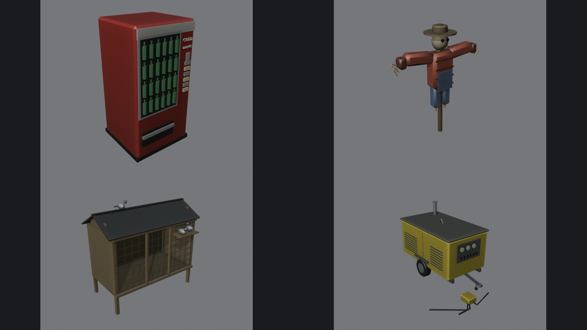
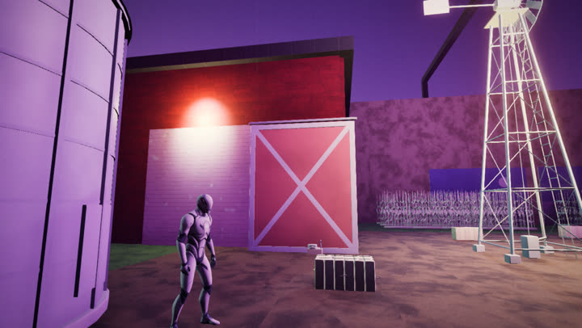
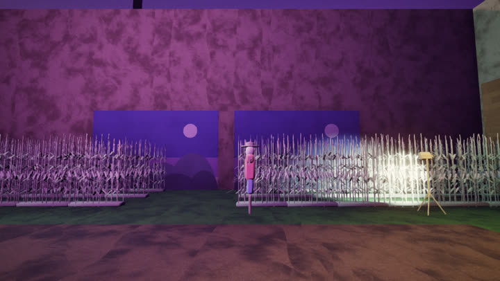
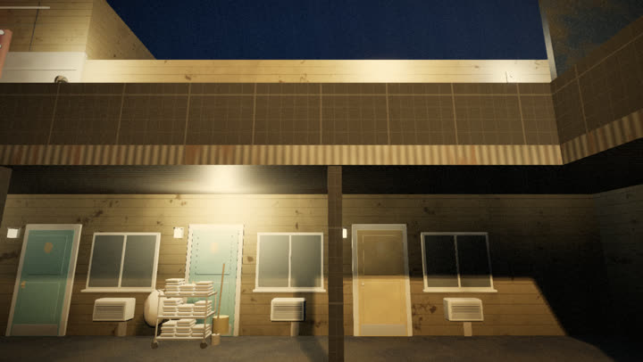
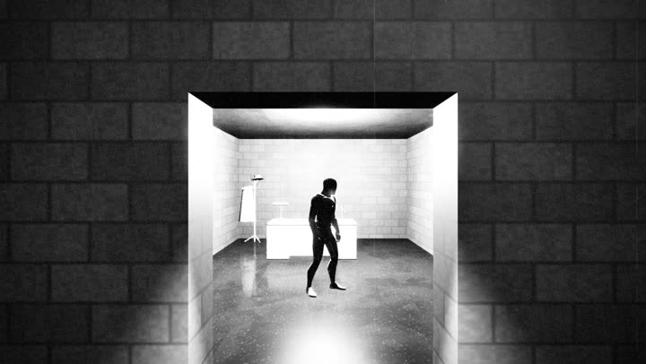

Art pass three: the second levels catch up
The motel, the farm, the rooftops and the finale's soundstage were still part grey box at 17:00. By 21:00 the second World session had replaced the last blocks with a windmill, a scarecrow, a motel office with a neon sign, pigeon lofts and flight cases, all built by script.
Day 2, Fri 13 NovHour 41
The first three levels got their art pass this afternoon. The other four were still behind: real walls, but grey blocks standing in for the things that make a place read. The Director gave the second World session one task for the evening: bring the second levels and the finale up to the standard of the first three.
Between 17:10 and 17:44 it went level by level, one commit each:
- Zombie 02, the motel: an ice machine, a front desk, a dumpster and a pickup truck replaced the last grey blocks. The office got a lit OFFICE neon, a soda machine and a phone booth, and the car park got clutter.
- UFO 02, the farm: a lattice windmill as the hero piece, a water trough, a scarecrow, corn stalks over the corn rows and better hay bales.
- Noir 02, the rooftops: shipping crates, a desk in the penthouse, pigeon lofts on both roofs and laundry strung across the alley.
- The finale, the soundstage: flight cases, a generator trailer and a prop table on the stage floor.
Every prop is a script that builds the mesh, so each gets a front and back preview before it goes into a level. Those previews caught ten fixes before anything was imported, like hay bales whose grooves read as fins.

 The farm's hero piece: the lattice windmill against the barn, with the tractor and a silo.
The farm's hero piece: the lattice windmill against the barn, with the tractor and a silo.
The barn door. At 20:19 the red-brown wash inside became cold moon spill through the door.
Corn rows, built from stalk modules, with the scarecrow between them. The motel car park: the MOTEL sign, the old cars and the barrels.
The motel car park: the MOTEL sign, the old cars and the barrels. The motel office: OFFICE neon, lit windows and the front desk inside.
The motel office: OFFICE neon, lit windows and the front desk inside.
The walkway: room doors, wall-unit air conditioners and a housekeeping cart.
Noir 02: a figure in the penthouse doorway, in black and white. The finale's soundstage floor: flight cases, a camera on its cart, tape marks.
The finale's soundstage floor: flight cases, a camera on its cart, tape marks.


These are editor stills taken at 20:55, not frames from a playthrough. The 19:30 reels of these levels had the performance readout burned in, and several shots were from inside a wall, so the engine took them again as stills from the editor at set camera positions. Two of the noir shots and the generator still came out black in the editor's lighting; I left those out.